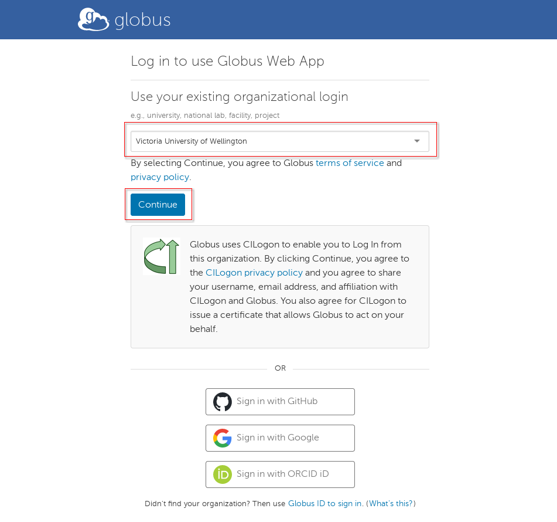
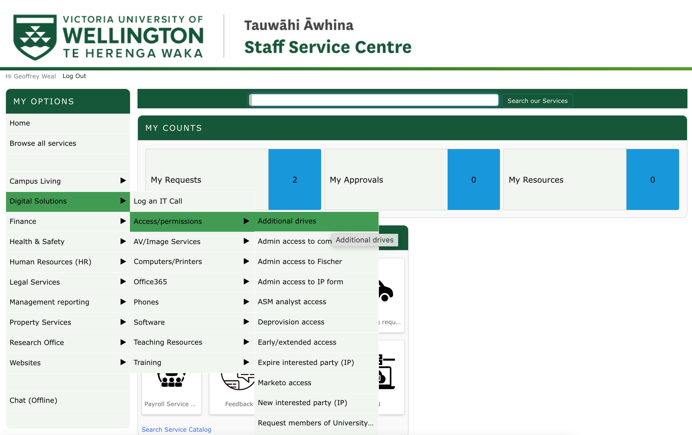
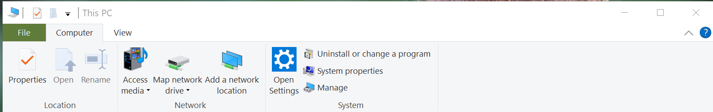
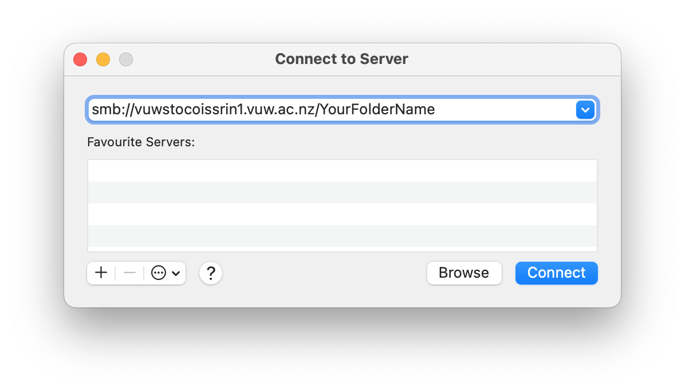

Connecting to Cloud/Storage Providers¶
Connecting to Cloud Providers¶
AARNET Cloudstor¶
NOTE: Cloudstor service has been decommissioned since Dec 2023. For old accounts, please check access with the provider.
All VUW researchers have access to the AARNET (Australia’s Academic and Research Network) Cloudstor service which provides 1 TB of space to each researcher. To use this service first login and download an appropriate client to your laptop or desktop (or smarthone if you wish):
NOTE: Within the Cloudstor web login settings you will need to create a Cloudstor Password, this is the password you will use to login on Rāpoi, it does not use your VUW credentials for the command line login.
We suggest setting up an App Password for Raapoi-rcopy rather than a global sync password. This way if your password is compromised you can easily just remove that app password. Setup an App Password by clicky on the settings gear on the top right and finding the App Password link.
Once you have setup your cloudstor (aka ownCloud) credentials you can use them to sync data to and from Rāpoi. For example, if I wanted to sync my project space to Cloudstor I would do the following from Rāpoi login node:
# Use Tmux to keep your session alive if you disconnect. You can reconnect to your Tmux session if you reconnect. See Tmux docs.
tmux
# Use our new module system
module use /home/software/tools/eb_modulefiles/all/Core
module load rclone/1.54.1
#check if cloudstor remote is already configured
rclone listremotes
tmux attach to reconnect) and then loads the rcopy module - which requires the use of our new module system.
If you don't already have CloudStor configured as a remote (which you won't if this is your first time using it) follow the instructions on aarnet docs page.
Once we have setup rclone to connect to CloudStor, we copy our data. In this case from<my scratch folder>/test to test on CloudStor
rclone copy --progress --transfers 8 /nfs/scratch/geldenan/test CloudStor:/test
Amazon AWS¶
Create a python environment and install awscli module.
python3 -m pip install awscli
Before you proceed you will need to configure your environment with your Access Key ID and Secret Access Key, both of which will be sent to you once your account is created or linked. The command to configure your environment is aws configure You only need to do this once, unless of course you use more than one user/Access Key. Most users can simply click through the region and profile questions (using the default of "none"). If you do have a specific region this should be relayed along with your access and secret keys.
Once you have the appropriate environment in place and your configuration setup you can use the aws command, plus an appropriate sub-command (s3, emr, rds, dynamodb, etc) and supporting arguments.
More information on the CLI can be found here: http://docs.aws.amazon.com/cli/latest/userguide/cli-chap-using.html
Transferring Data to/from Amazon (AWS) S3¶
To transfer data from S3 you first need to setup your AWS connect, instructions for that can be found above. Once that is done you should be able to use the aws commands to copy data to and from your S3 storage.
For example if I wanted to copy data from my S3 storage to my project directory I could do the following:
tmux
module load amazon/aws/cli
cd /nfs/scratch/harrelwe/project
aws s3 cp s3://mybucket/mydata.dat mydata.dat
aws s3 cp mydata.dat s3://mybucket/mydata.dat
tmux attach to reconnect). I then load the
modules necessary to use the AWS commands. I change directory to my project
space and use the aws s3 cp command to copy from S3. More information on using
aws can be found here:
http://docs.aws.amazon.com/cli/latest/reference/s3/index.html#cli-aws-s3
Working with AWS Data Analysis Tools¶
Amazon has a number of data analytics and database services available. Using the command line utilities available in Rāpoi, researchers can perform work on the eo cluster and transfer data to AWS to perform further analysis with tools such as MapReduce (aka Hadoop), RedShift or Quicksight.
A listing of available services and documentation can be found at the following: https://aws.amazon.com/products/analytics/
Google Cloud (gcloud) Connections¶
The Google Cloud SDK is available in Rāpoi. This includes a command-line interface for connecting to gloud services. To get started, first load the environment module. You can find the path with the module spider command. As of this writing the current version can be loaded thusly:
module load gcloud/481.0.0
This will give you access to the gcloud command. To setup a connection to your gcloud account use the init sub-command, eg.
gcloud init --console-only
Follow the instructions to authorize your gcloud account. Once on the Google website, you will be given an authorization code which you will copy/paste back into the Rāpoi terminal window.
Transferring Data to/from Google Cloud (gcloud)¶
To transfer data from gcloud storage you first need to setup your gcloud credentials, instructions for that can be found above. Once that is done you should be able to use the gsutil command to copy data to and from your gcloud storage.
For example, if I wanted to copy data from gcloud to my project directory I could do the following:
tmux
module load gcloud/481.0.0
cd /nfs/scratch/harrelwe/project
gsutil cp gs://mybucket/mydata.dat mydata.dat
gsutil cp mydata.dat gs://mybucket/mydata.dat
The above starts a tmux session to allow the transfer to continue even if I
disconnect from the cluster (type tmux attach to reconnect). I then load the
modules necessary to use the gsutil commands. I change directory to my project
space and use the gsutil cp command to copy from gcloud. More information on
using gcloud can be found here:
https://cloud.google.com/sdk/gcloud/
Working with GCloud Data Analysis Tools¶
Google Cloud has a number of data analytics and database services available. Using the gcloud command line utilities available on Rāpoi, researchers can perform work on the cluster and transfer data to gcloud to perform further analysis with tools such as Dataproc (Hadoop/Spark), BigQuery or Datalab (Visualization)
A listing of available services and documentation can be found at the following: https://cloud.google.com/products/
DropBox Cloud Storage¶
NOTE: Dropbox has upload/download limitations and we have found that once your file gets above 50GB in size the transfer will have a better chance of timing out and failing.
Configuring your Dropbox account on Rāpoi
Step A: On your local laptop or desktop start your browser and login to your Dropbox account
Step B: On Rāpoi type the following:
module load dropbox
Step C: Setup account credentials (You should only need to do this once):
Run the following command from Rāpoi
dbxcli account
You will now see something like the following:
- Go to https://www.dropbox.com/1/oauth2/authorize?client_id=X12345678&response_type=code&state=state
- Click "Allow" (you might have to log in first).
- Copy the authorization code. Enter the authorization code here:
Step D:
Copy the URL link listed in Step C1 and paste it into the web browser that you started in Step A
This will provide you with a long access code (aka hash). Now copy that access code and paste it into your Rāpoi terminal after Step C3 where it is asking for Enter the authorization code here
Now hit enter or return. You should see that you are now logged in with your Dropbox credentials
Basic Dropbox commands¶
Remember to load the dropbox environment module if you have not already (see module spider for the path)
Now type dbx or dbxcli at a prompt. You will see a number of sub-commands, for instance ls, which will list the contents of your Dropbox, eg
dbxcli ls
Downloading from Dropbox¶
Downloading uses the subcommand called: get. The basic format for get is:
dbxcli get fileOnDropbox fileOnRaapoi
For instance, if I have a datafile called 2018-financials.csv on Dropbox that I want to copy to my project folder I would type:
dbxcli get 2018-financials.csv /nfs/scratch/harrelwe/projects/finance_proj/2018-financials.csv
Uploading to Dropbox¶
Uploading is similar to downloading except now we use the subcommand: put. The basic format for put is:
dbxcli put fileOnRaapoi fileOnDropbox
For example I want to upload a PDF I generated from one of my jobs called final-report.pdf I would type:
dbxcli put final-report.pdf final-report.pdf
This will upload the PDF and name it the same thing, if I wanted to change the name on Dropbox I could:
dbxcli put final-report.pdf analytics-class-final-report.pdf
GLOBUS¶
NOTE: Presently, users can share/transfer data to and from locations including cluster, research storage, and personal devices. Options for enabling data sharing externally are being explored.
First time users should be able to sign up on GLOBUS website using their university credentials by following this link: https://app.globus.org/.

Please install and start GLOBUS connect personal. Please find those instructions here: https://globus.org/globus-connect-personal
You should now be able to share or transfer your data by following their guide: https://docs.globus.org/guides/tutorials/manage-files/share-files/.
Storage for Learning and Research (SoLAR) - VUW High Capacity Storage¶
The SoLAR Drive is the VUW High Capacity Storage system, allowing you to store all your research work. You can require many many terabytes of storage. It is also possible to connect your SoLAR drive to Rāpoi, which is great!
The following document will describe how to sign up for storage on the SoLAR Drive, as well as how to move and copy data between Rāpoi and your SoLAR Drive.
Signing up and getting storage on SoLAR¶
To get your own space on SoLAR. Do the following:
- Login to your staff intranet. To do this, open https://intranet.wgtn.ac.nz/ in your web browser, and sign in to your staff intranet.
- In a new browser tab, open https://intranet.wgtn.ac.nz/staff/services-resources/digital-solutions/contact-us
- You should see the follow page below. Click the Staff Service Centre button

- You will now be directed to the Staff Service Centre, which will look like below. Hover your mouse above Digital Solution -> Access/permissions -> Additional drives

- You will now be sent to the ADDITIONAL DRIVE ACCESS page. Fill out the details on this page and click the **Submit** button at the bottom of the page to send your request space on SoLAR.
Source: https://intranet.wgtn.ac.nz/staff/services-resources/digital-solutions/research-services/solar
Accessing your SoLAR Drive on Windows/Mac¶
Accessing the SoLAR Drive from off Campus¶
You will want to sign up to the Uictoria University VPN to gain access to SoLAR. Click https://vpn.vuw.ac.nz/ to get access to the VPN and to download the Cisco AnyConnect program on to your computer
Windows¶
- Open This PC (My Computer) and click Computer -> Map network drive at the top of the This PC explorer window.

- This will open a window as shown below. Enter the SoLAR path and the name of your patition on SoLAR, and click the Finish button.

- Enter in your username as STAFF\username and your password if required
Mac¶
- If you are off campus, login to your VPN using the Cisco AnyConnect program.
- In Finder, click Go -> Connect to Server...
- Write
smb://vuwstocoissrin1.vuw.ac.nz/YourFolderNameinto the box, whereYourFolderNameis the name of your partition on SoLAR, and click connect.

- In username give: ``STAFF/username``; give your VUW password, and click connect.
Moving/Copying files and folders between SoLAR and Rāpoi¶
There are several way to move/copy files and folder between SoLAR and Rāpoi
Best Way: Mounting SoLAR Partition in Rāpoi¶
Ask Digital Solutions for a service account to be created against your Research storage. Then a Raapoi admin will permanantly mount your storage on Raapoi - this process is time consuming and involves back and forth between DS and CAD.
Second Way: RClone¶
To do once I get it fixed
Third Way: smbclient¶
smbclient is specifically designed to transfer files and folders to and from smb clients. It is a bit cumbersome to use, but it is an alternative way for copying files between Rāpoi and SoLAR
To use smbclient, first cd into the directory that contains the folder you would like to copy from Rāpoi to SoLAR. Then in the terminal give the following input:
smbclient //vuwstocoissrin1.vuw.ac.nz/SoLAR_folder_name --user username --workgroup STAFF --command "prompt OFF; recurse ON; cd remote/target/directory; mput folder_on_Raapoi_you_want_to_copy_to_SoLAR "
You will then be asked to give your VUW password to copy data to SoLAR.
This may take a while if you are copying lots of files or large files. It is recommended that if you have lots of file in folders to copy (i.e. in the 100,000s of files) that you copy individually big folders rather than the whole directory at once so you can keep track of what has been copied if there are issues.
Note: You may see it not doing anything for a while, and then all of a sudden it will show you that it is doing things. This is normal.
If you want to copy files from SoLAR to Rāpoi, first cd into the directory on Rāpoi that you want to copy the SoLAR folder/file to. Then in the terminal give the following input:
smbclient //vuwstocoissrin1.vuw.ac.nz/SoLAR_folder_name --user username --workgroup STAFF --command "prompt OFF; recurse ON; cd remote/source/directory; mget folder_on_SoLAR_you_want_to_copy_to_Raapoi "
Warning
Don't run multiple smbclient at once, only a few at a time, if not one at a time. It can have problems if too many are running at one time.